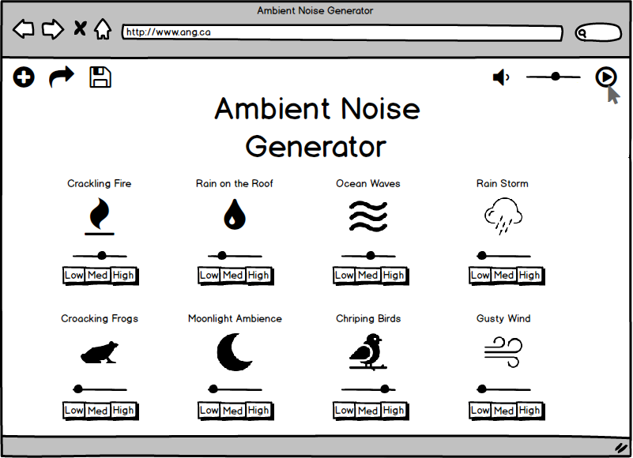
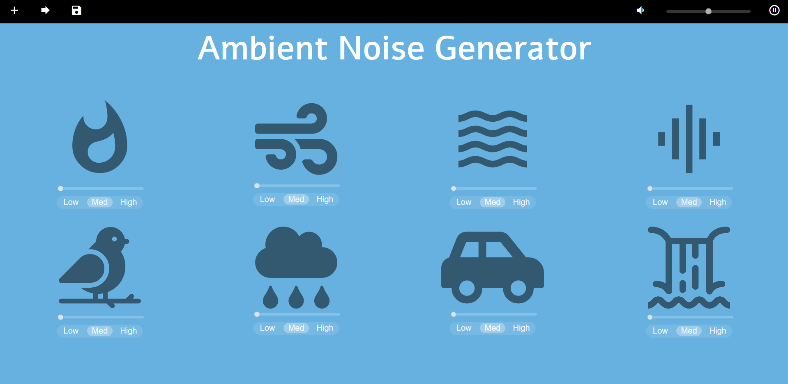
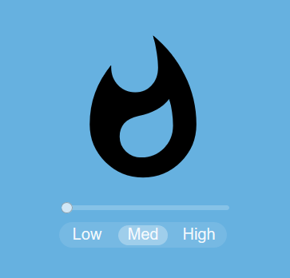
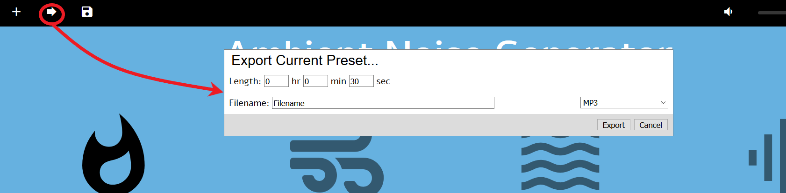
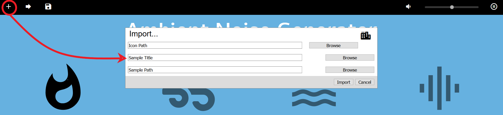

This page will discuss a more high fidelity prototype of the Ambient Noise Generator website. The prototype built includes interactive elements that encompasses the main functionalities of our design. The prototype can be found at: Prototype. It was constructed in accordance with the previously created low fidelity prototype and user requirements which can be found at Phase 1 and Phase 2 respectively.
The Ambient Noise Generator prototype was created mainly with HTML5 and CSS3 with Javascript also being used to play music and adjust volume. Github pages, a free service provided by Github, was used to host the website online. Most icons were taken from Font Awesome 5 and Google while some miscellaneous icons used were taken from https://www.flaticon.com/. The audio files were sourced from http://freesound.org/. The source code and assets for the prototype can be found at: https://github.com/CorbinGraham/SENG_310_phase_3/.
The prototype created closely followed the design scheme of our low fidelity prototype with a few minor changes which will be discussed below. The webpage is live and fully interactive in the simple layout we envisioned.
Low fidelity model:
High fidelity model:
Minor adjustments were made in our higher fidelity prototype such as the choice of fonts and removal of sound sample headings. However, the overall layout and look of the site has been kept.
The main functionalities of our site such as being able to play/pause different sounds and adjust the volumes of each have been implemented. The master play/pause and volume button is also working. Additionally, though not fully functional, clicking on the import and export button will show users the interface we drafted in our low fidelity prototype. The functionalities implemented will be explained in detail in relation to our user requirements below.
During the creation of the prototype and implementation of the requirements, some design decisions and choices were made which strayed from the predicted requirements. These deviations were due to different issues, some of which will be further explained in the specific requirement.
The main differences were in the design choice of the main webpage. The title font used was ‘Alef’ instead of ‘Quinta’ due to payment issues. The fonts for the buttons and import/export interface was not specified so similarly sans-serif font, Arial, from the Helvetica family was chosen. Another one was the removal of sound sample headings, which was done so to create a more minimalistic look to the site. Finally, although we have tried to use our original color scheme of blue and yellow, we found that the yellow heading makes the title much harder to read. Thus, we’ve changed it to white instead.
“There should be a library of existing/premade common sound samples on the website. Initial requirements will be for 20 different sounds, drawing primarily from natural sounds (e.g. birdsong, fire, waves, etc.).”
The library of existing sounds was reduced to 8 for the prototype due to time constraints. We based our choices on sounds currently available/popular on similar applications. Also, due to our limited library, we picked ones that were distinct enough to allow users to create varied soundscapes.
“The user should be able to independently control the volume of any of the ambient sounds as well as being able to control the master volume.”
All the sounds in the current library can be interacted with by using their individual volume sliders which start at 0. The sample sounds can also be played or paused by clicking on their distinct icon symbol. Further, we added a design element that had each icon become highlighted when clicked to give user feedback that the sound is now playing.
In addition, the master volume button which can be manipulated at the top right of the page allows users to control the loudness of the entire soundscape on a scale of 0 to 100.
“The user should be able to export an audio file, likely an mp3, based on the sounds they have chosen as well as the adjustments in volume that have been made to them.”
There is a button in the top left corner of the screen for exporting the current preset as an audio file. The button uses an arrow pointing to the right as its icon. Clicking on the icon will bring up a box prompting the user to select export settings. The actual exporting feature has not been implemented due to time constraints.
“The user should be able to choose the length/format of the audio file that they are exporting”
The box created from clicking the export button prompts the user to select their desired sound length, file name, and file type. Because exporting is not implemented, these selection boxes do nothing.
“In addition to downloading the file, the user should be able to save the parameters as a preset that they can name and reuse when the user comes back.”
There is a button for saving presets in the top left corner of the screen. It uses the symbol of a floppy disk as an icon. Clicking on the icon will bring up a small dialogue box indicating that saving was successful. We were unable to actually implement the preset saving feature and by extension, we were unable to implement a feature for selecting saved presets.
“Ability for a user to tweak the type of sounds that are being played. For each sound, there can be one or more variations on that sound to add variety to the product.”
The intensity of the sounds can be controlled with the three buttons below the volume controller of each sound sample . The buttons on click run javascript code that changes the sound to a lower or higher intensity version of the sound. The design of highlighting buttons when clicked is also included to help users identify which intensity they’re currently using.
“There should be an option that allows the users to upload any sound sample that they want. The uploaded sample will have the same volume control option as all the default sound samples but will not have an intensity option. The file format will be restricted to whatever sound file is used for the samples, and the custom sounds will remain local to the computer that they are uploaded from.”
An import button has been included in the top left corner of the screen. It uses an intuitive plus symbol as an icon. Clicking on the icon will bring up a box asking the user to input the sound name, the sound file, and the file to be used as an icon. We were unable to fully implement the importing functionality due to time constraints.
“Users should have the ability to remove samples that they have uploaded.”
We were unable to implement imported sound effects, and because of this we don’t have an option for removing uploaded samples.
“There should be a play/pause button so that users can stop or resume playback of sound samples.”
A functional master play/pause button have been implemented at the top rightmost corner of the screen. This allows users to easily pause and resume playback without having to select/reselect the samples they’ve chosen. The button also alternates between play and pause depending on the state as planned in phase 2.
Powered by w3.css